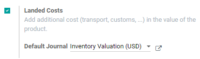
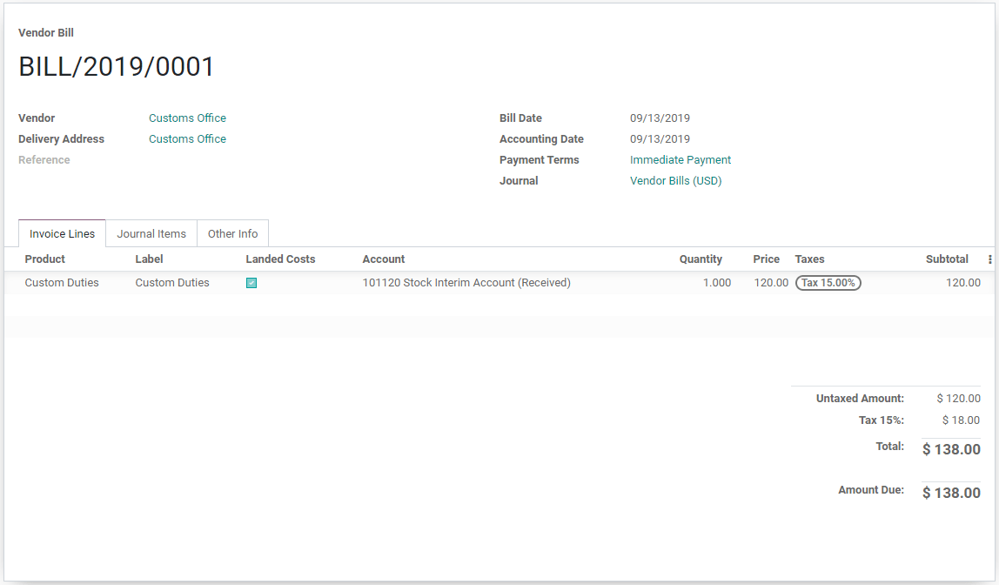

Integrating additional costs to products (landed costs)¶
The landed cost feature in Odoo allows the user to include additional costs (shipment, insurance, customs duties, etc.) into the cost of the product.
Configuration¶
First, go to and activate the Landed Costs feature. Odoo also gives the option to set a Default Journal in which the landed costs accounting entries will be recorded.
Add costs to products¶
Receive the vendor bill¶
After a vendor fulfills a purchase order and sends a bill, click Create Bill on the purchase order to create a vendor bill in Odoo. If the vendor bill includes landed costs, such as custom duties, tick the box in the Landed Costs column on the vendor bill invoice line.
For charges that are always landed costs, create a landed cost product in Odoo. That way, the landed cost product can be quickly added to the vendor bill as an invoice line instead of manually entering the landed cost information every time a vendor bill comes in.
First, create a new product in . Next, name the landed cost product. Then, set the Product Type to Service. A landed cost product must always be a service product type. After that, go to the Purchase tab and check the box next to Is a Landed Cost. Finally, click Save to finish creating the landed cost product.
If this product is always a landed cost, you can also define it on the product and avoid having to tick the box on each vendor bill.

Once the landed cost is added to the vendor bill (either by checking the Landed Cost option on the invoice line or adding a landed cost product to the bill), click the Create Landed Costs button at the top of the bill. Odoo automatically creates a landed cost record with the set landed cost pre-filled in the Additional Costs product lines. From here, decide which picking the additional costs apply to by clicking Edit and selecting the picking reference number from the Transfers drop-down menu. Finally, click Save.

After setting the picking, click Compute on the landed cost record. Then, go to the Valuation Adjustments tab to see the impact of the landed costs. Finally, click Validate to post the landed cost entry to the accounting journal.
The user can access the journal entry that has been created by the landed cost by clicking on the Journal Entry.
Note
The product that the landed cost is applied to must have a product category set to a FIFO or an AVCO method.

Note
Landed cost records can also be directly created in , it is not necessary to create a landed cost record from the vendor bill.